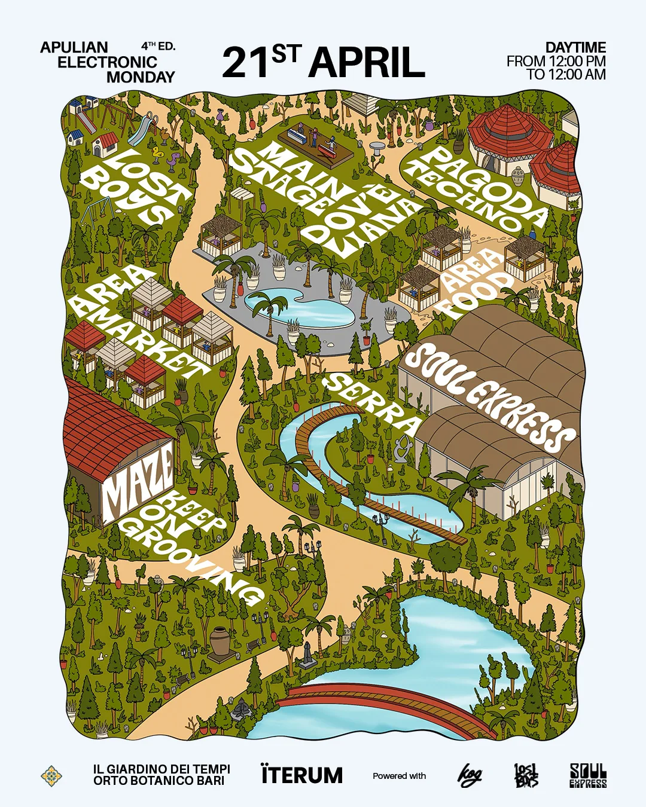
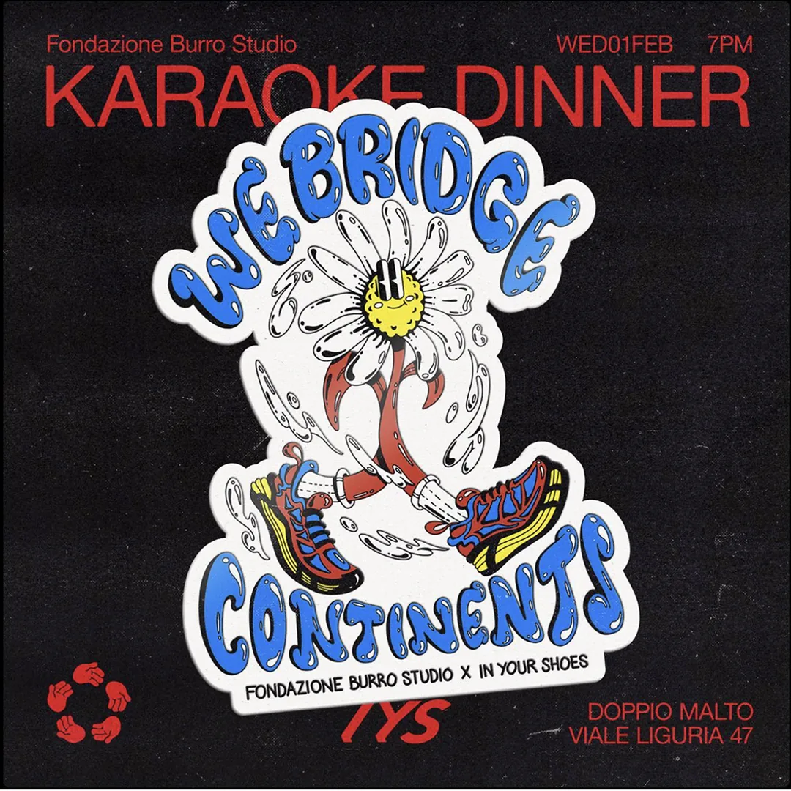
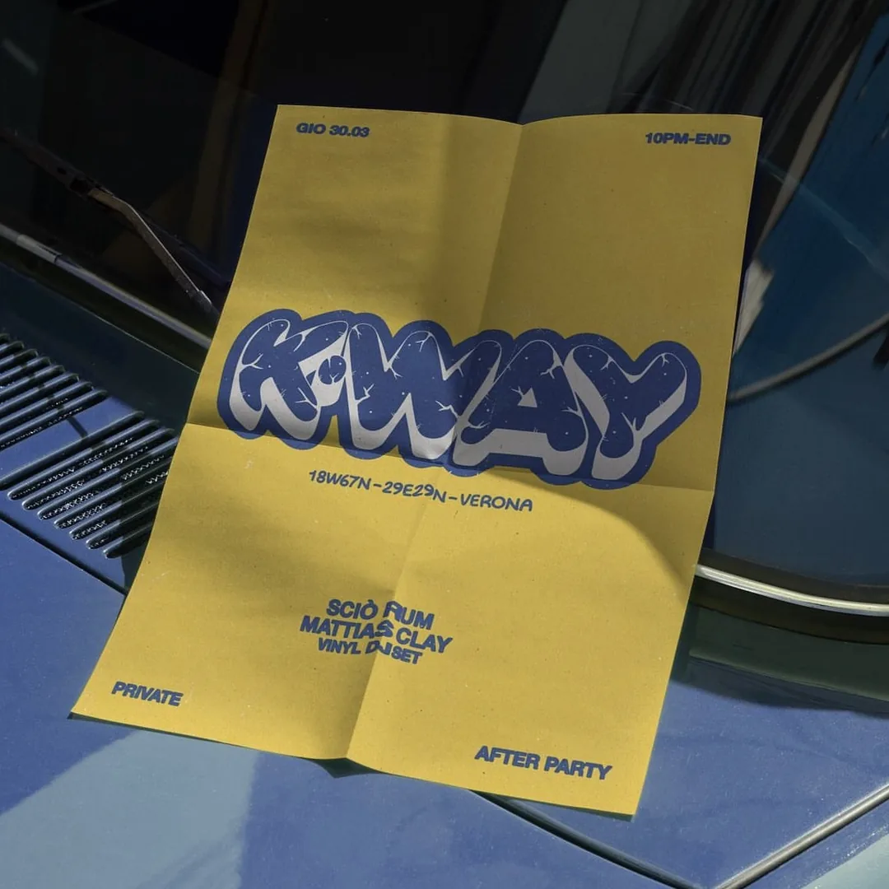
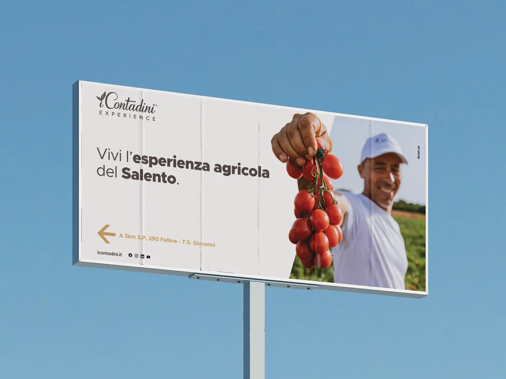
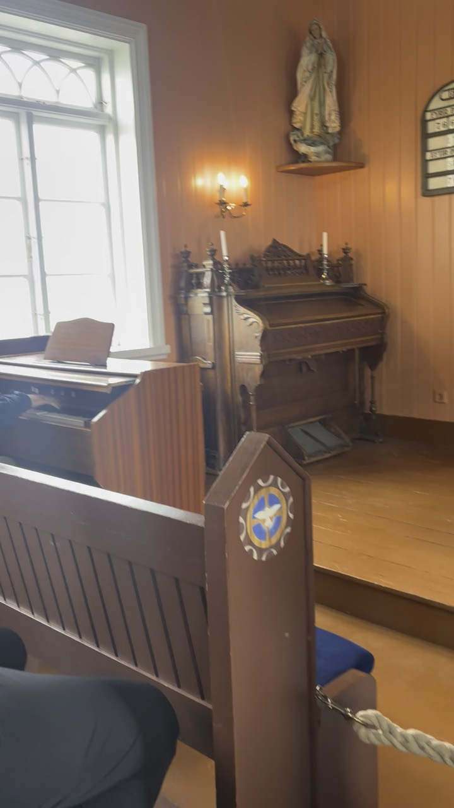
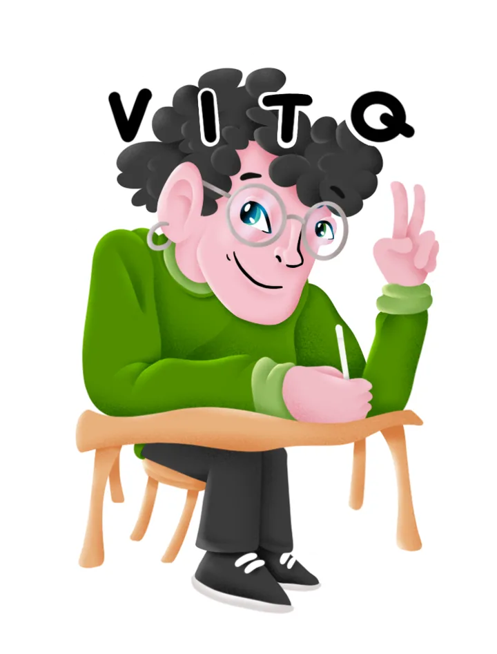

Disegno
identità
che restano
impresse.
- Graphic Designer
- Motion Designer
- Illustrator
Dall’identità di un brand a un’illustrazione, da una grafica
a un’animazione, fino al design di un sito web.
Creo immagini e sistemi visivi pensati per comunicare, sorprendere e farsi ricordare.
Progetti recenti
Branding, illustrazione, campagne
ed eventi:
ogni progetto ha il suo mondo e la sua palette.
Passa sopra le card per scoprirle, clicca per aprirle.
Tocca una card per aprire il progetto.

2025
2023
2024
2025-2026 2020
2020
Where's Kud Zamb?
Un gioco di ricerca ambientato a Bari:
trova Nicola, ragazzo sbruffone dal cuore tenero,
e la sua famiglia
in un poster interattivo ricco di dettagli.
Illustrazione, animazione e merchandising per raccontare l'ironia di una città.

Partner Le realtà dietro i premi


Premi & Pubblicazioni
- 2026Vincitore — Special Award, Premio NeologiaProduzione in collaborazione con Print Club Torino e Graphic Days®, in mostra al festival 2027
- 2026Vincitore — Farm Cultural Park Award, Premio NeologiaResidenza artistica presso Farm Cultural Park, realtà internazionale di rigenerazione culturale
- 2026Rassegna Stampa — Neologia GalleryIl progetto è raccontato in un articolo di Neologia Gallery, archivio dei nuovi talenti della comunicazione visiva italiana
- 2026Esposizione — Torino Graphic Days®Opera selezionata per l’XI edizione Graphic Days®
- 2025Borsa di Studio — Città di BariVincitore per la miglior tesi sulla città di Bari A.A. 2024/2025 — Premiazione a cura del Sindaco di Bari Vito Leccese
- 2025Pubblicazione Editoriale — Grafica MagazineProgetto pubblicato nel terzo volume di Grafica Magazine — sold out
- 2024Rassegna Stampa — TelebariPubblicazione a cura di Sara Di Leo
- 2024Esposizione — Comune di BariOpera esposta a "Pane e Pomodoro Beach"
- 2024Riconoscimento — Biblioteca NABATesi selezionata per Catalogo Library NABA
Un tipo particolare...
Sono un ragazzo riflessivo e ironico; mi piace stare in compagnia,
per questo prediligo il lavoro
di squadra: confrontarmi con gli altri
mi porta a scoprire cose sempre nuove.
Nel tempo libero coltivo diverse passioni: il disegno, la fotografia analogica e la musica, suonando tastiera e ukulele.
Formazione
-
 2021 – 2024 · Milano Laurea Triennale
2021 – 2024 · Milano Laurea Triennale
Graphic Design & Art Direction NABA – Nuova Accademia di Belle Arti · 110/110 -
 2019 · Bari Qualifica professionale
2019 · Bari Qualifica professionale
Graphic Design & Art Director IDEAcademy – Italian Design Academy -
 2013 – 2018 · Bari Diploma di Primo Grado
2013 – 2018 · Bari Diploma di Primo Grado
Indirizzo Grafica Liceo Artistico “G. De Nittis”

Competenze
- EditoriaLibri, riviste, cataloghi
- Advertisingcampagne ADV, affissioni
- BrandingIdentità visiva, loghi, sistemi grafici
- PackagingConfezioni, etichette, scatole
- Social & DigitalPED, contenuti social, banner
- Motion DesignAnimazione, video editing, motion graphics
- Web DesignSiti web
- Software


